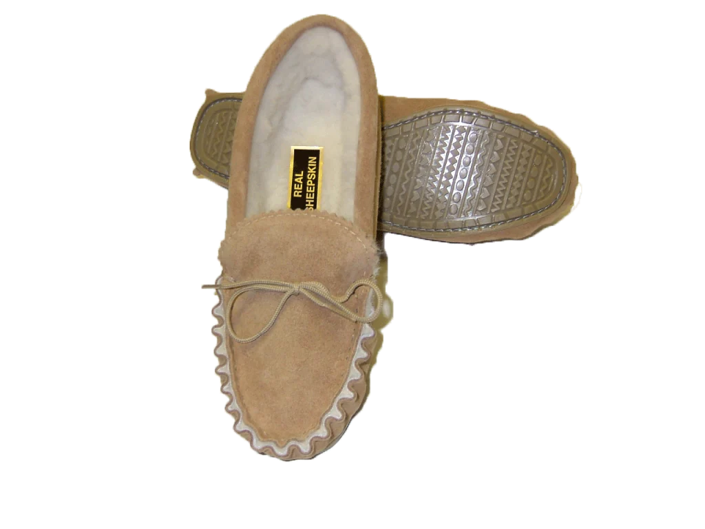

Some History
Antiquity
Earliest Evidence of footwear
Sandals made of sagebrush bark, discovered in 1938 at Fort Rock Cave in the US state of Oregon, date back to around 7000 or 8000 BC, making them the earliest shoes ever discovered. Found in the Areni-1 cave complex in Armenia in 2008, the world's oldest leather shoe is thought to have been manufactured around 3500 BC. It is composed of a single piece of cowhide that has been laced with leather cord along seams at the front and rear.

Americans
A comparable style of footwear known as the moccasin was used by early Native Americans in North America. These are soft-soled, form-fitting shoes, usually made of bison or leather hides. A lot moccasins were also embellished with different beads and other decorations. Since moccasins were not meant to be waterproof, the majority of Native Americans went barefoot throughout the warm summer months and in rainy conditions. While the Indigenous people of Mexico used the Yucca plant, South Americans used the leaves of the sisal plant to construct string for sandals.

Africa and Middle East
Thong sandals, the ancestors of the contemporary flip-flop, were worn when civilizations emerged. Their depictions in 4000 BC ancient Egyptian murals are the source of this practice. Somewhat derived from the city of Thebes, "Thebet" may have been the name given to these sandals in Egyptian times. The earliest of these thebets may have made its appearance in the Early Dynastic Period, but it was discovered during the Middle Kingdom. One pair, which dates to about 1,500 years ago, was discovered in Europe. It was constructed of papyrus leaves. Additionally, in the first century of the Christian era, they were worn in Jerusalem.

Asia and Europe
Most ancient Greeks believed that shoes were superfluous, unattractive, and self-indulgent. To project prestige, people wore shoes to the theatre, however many just wore bare feet. The Ancient Olympic Games featured barefoot and nude competitors. Not only were the hoplite warriors shown barefoot, but even the gods and heroes were. Alexander the Great's barefoot army defeated his huge empire during their barefoot combat. It was also thought that the runners of antiquity ran barefoot.
The Romans
The Greek ideas about shoes and clothes were not embraced by the Romans, who finally overthrew the Greeks and assimilated many elements of their civilization. Roman attire was considered an emblem of authority, and shoes were considered an essential part of a civilised society, even though slaves and the impoverished typically wore bare feet. Roman troops were given chiral shoes, meaning that the left and right shoes were distinct. Soldiers' shoes had riveted insoles to improve grip, boost comfort, and prolong the life of the leather. The officers' status was also shown by the style of these shoes. The soldier's rank increased with the intricacy of the insignia and the height at which the boot was placed on the leg.